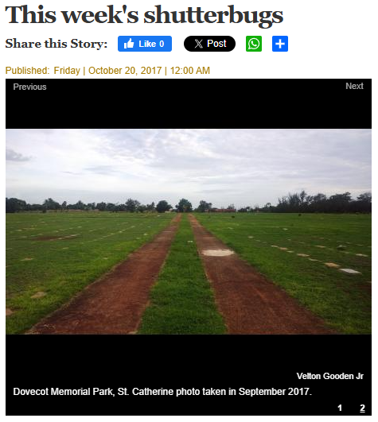

Every so often, the drive to create pauses long enough to look backward.
In those moments, opening an old folder or rummaging through that one drawer doesn’t just reveal the forgotten, it points to earlier versions of yourself waiting there. Sometimes the mess of old drafts and files is really just a record of progress, each piece carrying a trace of how far the journey has come.
That happened while tidying my Google Drive earlier this week. I went in to free up some space and feel virtuous. I came out with a small pile of artefacts that refused to be deleted.
It showed me why certain themes keep circling back, why some formats always feel natural, and why even the so-called “bad” drafts hold an undeniable charm.
That’s when it clicked. An archive isn’t just storage...
It’s a story.
And, if treated with a little care, it becomes fuel.
Why we rush past what we’ve already made
Momentum is usually tied to novelty. Platforms reward the newest upload, clients want something fresh, and our own standards rise quickly enough that yesterday’s work starts to feel clumsy. It often seems easier to keep moving forward than to linger on what came before.
But when everything is measured by what’s next, we overlook what’s already there. That quick rejection of old work can strip away valuable insight. A half-formed idea that didn’t work at the time might connect perfectly with something you’re exploring now.
The rough edges can point to instincts that were true long before the polish arrived. And those imperfect drafts, instead of being proof of failure, are actually the receipts of growth.
Archives also provide a mirror. Looking back highlights patterns, habits, and recurring ideas that don’t always feel obvious in the moment. What once looked random begins to reveal a rhythm. That rhythm isn’t just sentimental, it’s the blueprint for a voice, a brand, or a creative identity taking shape.
The rush for recency also ignores the fact that audiences enjoy context. They may discover you through a recent post, but when they scroll further back and see your beginnings, it makes the story richer. The leap from early clumsy work to more polished output makes progress relatable, and relatability builds trust.
Preservation, not hoarding
There’s wisdom in clearing space, but minimalism taken too far can erase the very fingerprints that prove a journey happened. Deleting everything that feels embarrassing risks losing the texture that gives a story weight. The line between clutter and evidence is thin, but it matters.
Preservation isn’t about keeping everything. It’s about recognising which pieces carry meaning beyond their surface. I was reminded of this when I stumbled on an old photo that almost disappeared from memory. Back in 2017, armed with a Nokia Lumia 1020, I snapped a shot at Dovecot Memorial Park and casually sent it to The Gleaner’s weekly Shutterbug feature.
I didn’t think much of it at the time, just a youth sending an email, but to my surprise it was selected and published. I only rediscovered it years later while running a Google search of my own name. That unintentional act of archiving became part of the record, and looking back at it now, it feels like a small but powerful reminder of how preservation works in ways we don’t always expect.

So archives are a bit like soil. Not every seed planted will sprout, but the richness comes from the mixture of what succeeded and what failed. By preserving artefacts selectively, you build a kind of creative compost that fertilises what comes next. The point isn’t to live surrounded by relics, but to curate enough history that the present has depth.
Documentaries prove this all the time. It’s rarely the narration alone that makes them powerful, it’s the objects, the photos, the scraps of paper that anchor memory in something tangible. The same principle applies to creative work: without artefacts, stories float. With them, they land.
The preservation mindset also adds emotional honesty to creative identity. When you share the raw or awkward parts alongside the polished, it signals authenticity. It shows that the current level of craft didn’t appear overnight, but was earned through time and mistakes.
From memory to momentum
Preservation can also fuel forward motion. Raw material set aside becomes a stockpile for days when inspiration feels thin. What looks like scraps today can become the spark tomorrow. The important thing is not just to keep these items, but to revisit them with intention.
Looking ahead, this is where I want to weave more of the archive into my content. Rather than treating all old files as throwaways, I plan to fold some back into the work I share, sometimes as quiet references, sometimes as visible anchors.
I’ve already seen how an image or a snippet from the past can bring an unexpected layer of authenticity, like in the opening edition of this newsletter. Going forward, I intend to tap into that more often, letting the old and the new sit side by side, to show process and continuity. Over time, I want the archive to stop feeling like storage and become a bigger part of the storytelling itself.
I imagine this will take the shape of more deliberate throwbacks, weaving fragments of old media and moments into new content. Not just as decoration, but as connective tissue that shows how ideas evolve. By letting those fragments resurface, the content can carry both continuity and contrast, evidence that growth isn’t about abandoning the old, but carrying it forward in new ways.
What an archive can surface
A dive into the past often reveals more than expected. The immediate instinct is to cringe, but with a softer lens the archive tells a different story.
- A map of themes. Over time, recurring threads start to appear. Maybe humour keeps sneaking in, even in serious work. Maybe visual storytelling feels more natural than text. At first, these things look scattered, but zoomed out they reveal a lane. The archive highlights not randomness, but rhythm. Recognising that rhythm can help set a clearer creative direction.
- A kinder metric. Measuring old work against current standards always makes it look weaker. But measuring it against honesty, was this true to me at the time, changes the evaluation. By that metric, much more qualifies as valuable. It may not be flawless, but it is authentic. This way of looking reframes “failure” as evidence of effort, and evidence of effort is what builds mastery.
- A practical buffer. There’s also the very real benefit of having backup material. When schedules are packed, the archive provides a rhythm without resorting to filler. A half-finished draft can be completed. A clip can be reframed. A thought can be expanded. Instead of silence or burnout, the archive supplies continuity. For anyone who has struggled to stay consistent, this is an underrated safety net.
The more it’s revisited, the more the archive stops being a graveyard and starts being a garden. A place that not only remembers the past but actively nourishes the present.
And perhaps most importantly, the archive provides perspective. It lets you compare the distance between where you were and where you are now, not in a superficial sense of improvement but in a deeper sense of consistency. It shows which instincts have remained steady across years, and which skills have been layered on top. That kind of perspective is easy to lose when you’re caught up in the day-to-day push to produce, but the archive quietly keeps score in a way that feels grounding rather than pressuring.
Preservation as a creator’s discipline
Preservation isn’t nostalgia. It’s discipline. The act of keeping just enough to build stronger stories later. A snapshot, a note, a recording, even a childhood report card that planted a seed. If the object can’t be kept, at least capture its existence in words.
Joe Pulizzi, in Content Inc., frames this through content audits: reviewing the work already done to find themes, strengths, and gaps. A personal archive works in much the same way. It is an ongoing audit of your creative self. Instead of reinventing from zero, you refine what’s already there. Instead of constantly chasing novelty, you allow continuity to deepen the message. The habit compounds: over time, the archive becomes not only a safety net but also a library that strengthens creative authority.
The impact of preservation becomes visible years later. The creator who keeps enough of their past has stories layered with proof and history, while the one who discards too much risks producing work that floats without roots. Practicing preservation ensures that creativity doesn’t just sprint forward but grows with depth.
Closing
The archive isn’t just some museum of who you used to be. It’s a living reservoir. Opened with kindness, it reveals context, ideas, and proof that a voice has been trying to speak for a long time.
Presence doesn’t always mean chasing the next thing. Sometimes it means going back, lifting what was left behind, and giving it new life.
That’s the work ahead: digging up memories from the drawer, finishing unseen pieces that deserved better, and giving old work a second breath. And if you choose to look through your own neglected folders, you might find there’s more narrative there than you remember.
Because sometimes, the archive isn’t looking backward. It’s already pointing you toward what comes next.
Until next time,
Velton
Want more essays like this?
Creator's Current is published on LinkedIn. Subscribe to get new issues in your feed.
This piece is part of Creator's Current, Velton Gooden Jr.'s ongoing series on creativity, digital presence, storytelling, and practical systems. Originally published on LinkedIn: View on LinkedIn